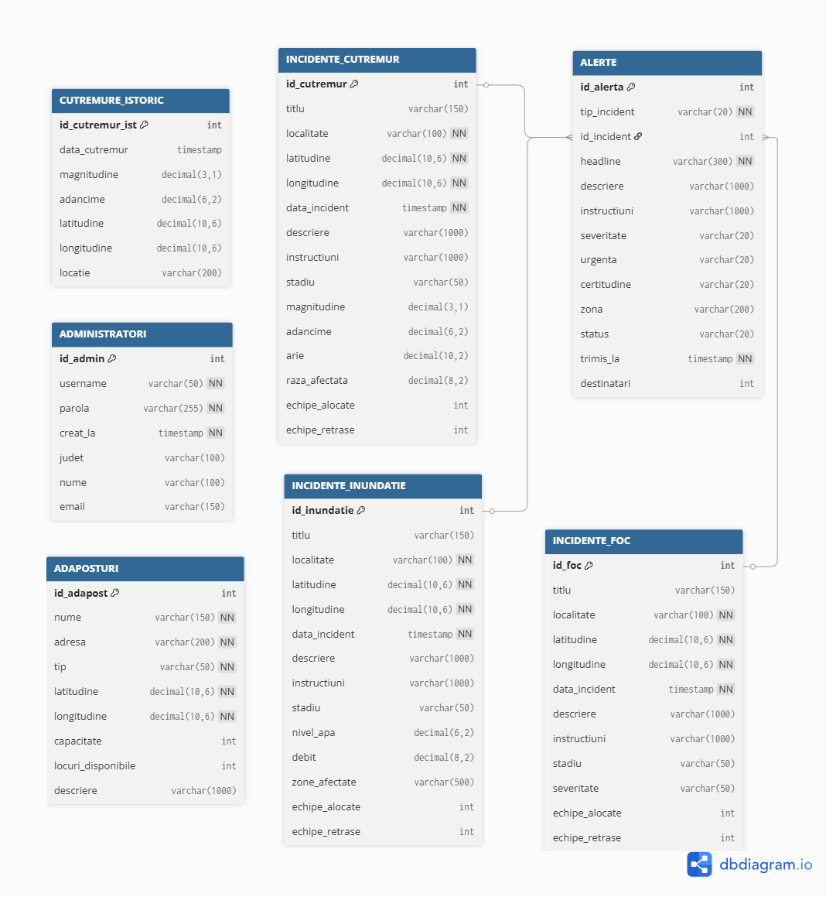
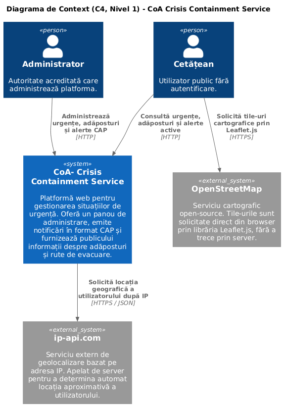
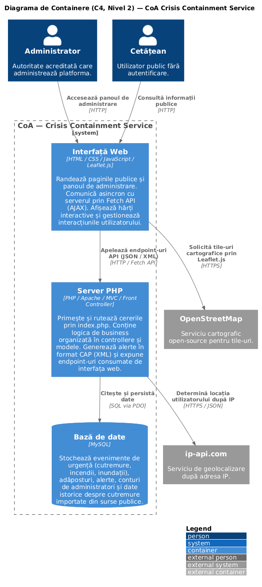
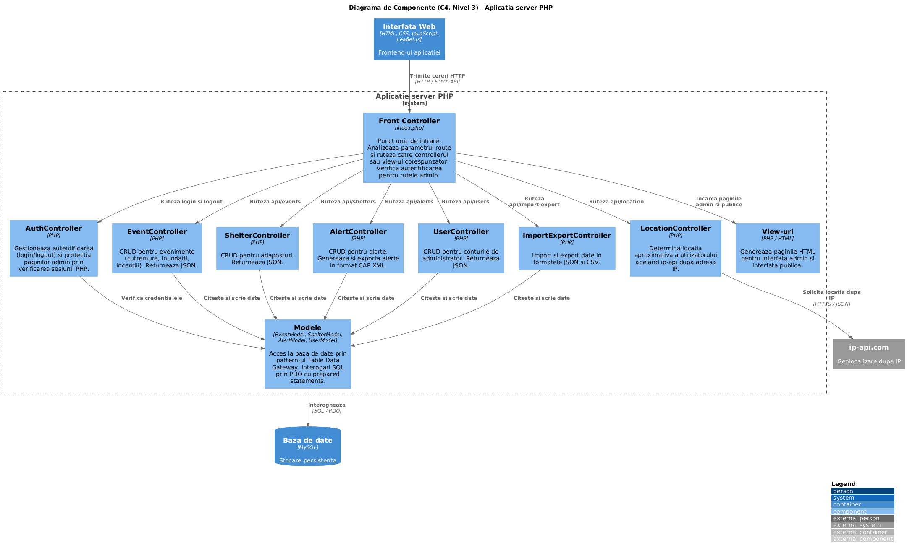

Software Requirements Specification - Tehnologii Web 2025-2026
CoA - Crisis Containment Service
Platforma web pentru gestionarea situatiilor de urgenta de catre autoritati
Licenta: MIT License
1. Introducere
1.1 Scop
Acest document reprezinta Specificatia de Cerinte Software pentru aplicatia web CoA - Crisis Containment Service, realizata in cadrul cursului de Tehnologii Web, anul universitar 2025-2026. Documentul descrie cerintele functionale si non-functionale ale platformei, arhitectura adoptata si principalele decizii de implementare.
1.2 Scopul produsului
CoA este o platforma web pentru gestionarea situatiilor de urgenta (cutremure, inundatii, incendii) de catre autoritatile competente. Aplicatia ofera un panou de administrare complet, vizualizare geografica a evenimentelor si adaposturilor, emiterea de alerte in format CAP (Common Alerting Protocol), import de date istorice din seturi de date publice si export in formate deschise. Totodata, pune la dispozitia cetatenilor o interfata publica de informare, fara autentificare.
1.3 Referinte
- OASIS CAP v1.2 - docs.oasis-open.org
- Kaggle - Global Earthquake Events Dataset - kaggle.com
- Kaggle - Cutremure Romania 2012-2024 - kaggle.com
- W3C Scholarly HTML - w3c.github.io/scholarly-html
- IEEE SRS Template - github.com
- Leaflet.js - leafletjs.com
2. Descriere generala
2.1 Descrierea aplicatiei
CoA este o aplicatie web, construita fara framework-uri externe la nivel de client sau server. Arhitectura urmeaza pattern-ul MVC cu Front Controller:
toate cererile trec printr-un punct unic de intrare (index.php), care analizeaza parametrul route si ruteza catre controllerul sau
view-ul corespunzator. Modelele gestioneaza accesul la date, iar view-urile PHP genereaza paginile HTML.
Comunicarea dintre frontend si backend se realizeaza asincron prin Fetch API, serverul expunand endpoint-uri care returneaza date in format JSON pentru operatiile CRUD si XML (CAP) pentru exportul alertelor. Aceasta plaseaza aplicatia in categoria arhitecturii bazate pe servicii web.
2.2 Functiile principale
- Autentificare si gestionarea sesiunilor pentru administratori
- CRUD complet pentru evenimente (cutremure, inundatii, incendii)
- CRUD complet pentru adaposturi cu localizare geografica
- Creare si export de alerte in format CAP (XML)
- Harta interactiva cu Leaflet.js pentru vizualizarea evenimentelor si adaposturilor
- Import si export de date in format JSON si CSV
- Gestionarea conturilor de administrator
- Interfata publica de informare pentru cetateni
2.3 Utilizatori
Aplicatia are doua tipuri de utilizatori. Administratorul este o autoritate acreditata care are acces complet la panoul de administrare si poate gestiona toate entitatile platformei. Publicul reprezinta orice persoana care acceseaza platforma pentru informatii, fara autentificare si fara posibilitatea de a modifica date.
2.4 Mediul de operare
Aplicatia ruleaza pe un server Apache cu suport PHP, folosind MySQL ca baza de date relationala, accesat prin PDO. In dezvoltare am folosit XAMPP local. Interfata functioneaza in orice browser modern pe desktop, tableta sau telefon.
2.5 Dependente
- Leaflet.js - biblioteca open-source pentru harti interactive
- ip-api.com - geolocalizare dupa IP, acces public
- ipify.org - detectarea IP-ului public
- Leaflet Routing Machine - plugin Leaflet pentru calculul si afisarea rutelor de evacuare
3. Interfata utilizator
3.1 Decizii de design
Interfata administrativa foloseste un layout cu sidebar fix pentru navigare si zona de continut principala pentru tabele si formulare. Interfata publica foloseste un layout centrat, cu accent pe harta interactiva si liste de informatii clare.
Toate paginile folosesc fonturi pentru lizibilitate maxima. Componentele de feedback (toast-uri, badge-uri colorate dupa severitate) ofera utilizatorului context vizual imediat asupra starii evenimentelor.
3.2 Paginile aplicatiei
Aplicatia are doua seturi de interfete distincte.
Interfata publica
events_public.php- lista evenimentelor cu filtrare si hartadetails_public.php- detalii eveniment individualshelter_public.php- lista adaposturilor cu localizare
Panoul de administrare
login.html- autentificaredashboard.php- statistici generaleevents.php- gestionare evenimenteshelters.php- gestionare adaposturialerts.php- gestionare alerte si export CAPusers.php- gestionare administratoriimport-export.php- import si export fisiere
Toate paginile sunt responsive. Notificarile de succes si eroare sunt afisate prin componente toast generate dinamic in JavaScript.
4. Functionalitati
4.1 Autentificare si sesiuni
Sistemul de autentificare este bazat pe sesiuni PHP. Utilizatorul completeaza emailul si parola in formularul de login, browserul trimite un request POST, serverul verifica credentialele si creaza sesiunea daca sunt corecte.
- Parolele sunt stocate exclusiv ca hash prin
password_hash() - Verificarea parolei se face cu
password_verify() - Datele sesiunii sunt stocate server-side, clientul primeste doar cookie-ul
PHPSESSID - Toate paginile admin verifica sesiunea activa prin
AuthController::requireAuth() - La logout, sesiunea este distrusa complet cu
session_destroy()
4.2 Gestionare evenimente
Functionalitate centrala a platformei: operatii CRUD pe trei tipuri de incidente:cutremur, inundatie, incendiu.
- Fiecare tip de eveniment are tabel propriu in baza de date
- Toate evenimentele au coordonate GPS pentru afisare pe harta
- Filtrarea functioneaza combinat dupa tip, status si an
- Un singur modal cu schimbare de mod (adaugare vs editare) gestionat prin JavaScript
- Datele Kaggle sunt importate prin scripturi dedicate (
import_kaggle.php,import_ro.php) - Toate operatiile CRUD se realizeaza asincron prin Fetch API
4.3 Gestionare adaposturi
Operatii CRUD pe adaposturi cu localizare geografica. Adaposturile sunt vizibile public si apar pe harta interactiva. Aplicatia ofera rute de evacuare de la locatia curenta a utilizatorului catre cel mai apropiat adapost disponibil, determinate pe baza geolocalizarii prin IP.
4.4 Alerte CAP
Creare si export de alerte de urgenta conform standardului international OASIS CAP 1.2. Fiecare alerta contine: headline, descriere, instructiuni, severitate, urgenta, certitudine si zona. Exportul genereaza un document XML well-formed cu toate elementele obligatorii ale standardului, tipul incidentului fiind mapat la categoriile CAP (cutremur - Geo, inundatie - Met, incendiu - Fire).
4.5 Harta interactiva
Aplicatia include doua harti interactive bazate pe Leaflet.js si tile-urile OpenStreetMap, incarcate direct in browser.
Prima harta, disponibila pe pagina publica de evenimente, afiseaza markerele tuturor evenimentelor din baza de date, incarcate o singura data la deschiderea paginii printr-un apel asincron catre API. Markerele nu se actualizeaza in timp real, ele reflecta starea bazei de date la momentul incarcarii paginii. Filtrarea evenimentelor dupa tip sau status ascunde si afiseaza markerele corespunzatoare direct pe harta, fara un nou apel la server. Click pe un marker din lista centreaza harta pe acel eveniment.
A doua harta, disponibila pe pagina de adaposturi, afiseaza locatiile adaposturilor. Suplimentar, aceasta harta calculeaza si deseneaza ruta de evacuare de la locatia utilizatorului pana la adapostul selectat, folosind Leaflet Routing Machine. Locatia utilizatorului este determinata prin geolocalizare nativa a browserului (navigator.geolocation), cu fallback la geolocalizare dupa adresa IP prin ip-api in cazul in care utilizatorul refuza accesul sau browserul nu suporta geolocatia.
4.6 Import si export date
Transfer de date in formate JSON si CSV, pentru toate entitatile principale (evenimente, adaposturi, alerte). Fisierele importate sunt validate tructural inainte de insertia in baza de date. Exportul se descarca direct din browser fara stocare intermediara pe server.
4.7 Gestionare utilizatori
Operatii CRUD pe conturile de administrator. Parolele sunt stocate exclusiv ca hash si se re-hasheaza doar daca este introdusa o parola noua la editare.
4.8 Interfata publica
Cetatenii pot vizualiza evenimente, adaposturi si alerte fara autentificare. Nicio operatie de scriere nu este accesibila fara autentificare.
5. Cerinte non-functionale
5.1 Securitate
- SQL Injection - toate interogarile folosesc PDO cu prepared statements
- XSS - datele dinamice inserate in DOM folosesc
textContentin loc deinnerHTML; server-side se folosestehtmlspecialchars() - Parole - stocate exclusiv ca hash, verificate cu
password_verify() - Sesiuni - date stocate server-side, clientul detine doar identificatorul de sesiune
5.2 Responsivitate
Toate paginile includ meta viewport si folosesc CSS Flexbox si Grid pentru adaptare la rezolutii diferite.
5.3 Calitate cod
- Arhitectura MVC cu separare clara Model, View, Controller
- Cod comentat
- Gestionare prin Git cu branch-uri per functionalitate
- HTML validat prin W3C Markup Validation Service
5.4 Portabilitate
Include-urile PHP folosesc cai absolute, iar configuratia bazei de date este centralizata in config/database.php.
6. Functionare interna
6.1 Fluxul unui request AJAX
Exemplu pentru crearea unui eveniment nou din panoul admin:
1. Admin completeaza formularul modal si apasa "Salveaza"
2. admin.js - fetch POST index.php?route=api/events cu body JSON
3. Apache primeste request-ul, il redirecteaza catre index.php
4. index.php - analizeaza parametrul route=api/events
5. index.php - instantiaza EventController - handleApiRequest()
6. EventController - json_decode(php://input) - model->createEvent()
7. EventModel - PDO prepare INSERT - execute()
8. MySQL inserteaza randul in baza de date
9. EventController - echo json_encode(['success' => true])
10. admin.js - arataToast('Eveniment salvat!') - actualizare DOM7. Structura bazei de date
Baza de date coa_db contine tabele separate pentru fiecare tip de incident,
permitand campuri specifice (de exemplu, magnitudine si adancime doar pentru cutremure, nivel apa si debit pentru inundatii).

Anexa A - Glosar
| Termen | Definitie |
|---|---|
| AJAX | Asynchronous JavaScript and XML - comunicare asincrona browser-server fara reincarcarea paginii |
| CAP | Common Alerting Protocol - standard OASIS pentru alerte de urgenta in format XML |
| CRUD | Create, Read, Update, Delete - operatiile fundamentale pe date persistente |
| DOM | Document Object Model - reprezentarea arborescenta a unui document HTML/XML |
| MVC | Model-View-Controller - pattern arhitectural cu separarea datelor, prezentarii si logicii |
| PDO | PHP Data Objects - extensie PHP pentru acces uniform la baze de date |
| SQL Injection | Atac prin care input malitios este interpretat ca SQL |
| XSS | Cross-Site Scripting - injectare de cod JavaScript in paginile altor utilizatori |
| CAP Well-formed | Document XML cu sintaxa corecta: element radacina unic, taguri inchise si imbricate corect |
Anexa B - Modele de analiza


